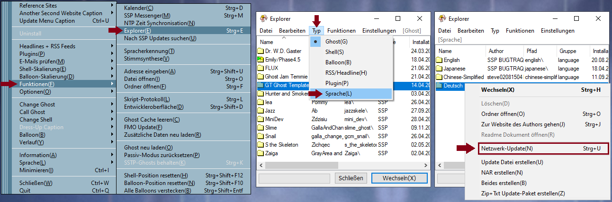

Dieses Sprach-Paket übersetzt SSP's Menüs und anderweitige Anzeigen ins Deutsche.
▶Bitte beachte, dass dieses Sprach-Paket die Sprache von einzelnen Ghosts NICHT ändert.◀
Installation
Um das Sprach-Paket zu installieren, ziehe seine NAR-Datei auf einen beliebigen Ghost, der sollte das Sprach-Paket automatisch von alleine installieren. Die Installation war erfolgreich, wenn die Option "Deutsch" im "Language"-Menü im Rechts-Klick-Menü erscheint. Klicke darauf um die Sprache auf Deutsch zu umzustellen.
Updatevorgang
Nach einer erfolgreichen Installation kann das Sprach-Paket geupdated werden indem man im SSP-Explorer, welcher über das Rechts-Klick-Menü unter Funktionen oder durch drücken von Strg+E bei gehighlighteten Ghost geöffnet werden kann, unter Typ->Sprache das Sprach-Paket rechts-klickt und dann "Netzwerk-Update" auswählt.
Es ist wahrscheinlich am sinnvollsten immer gleich nach einem SSP-Update und nochmalein paar Tage danach eine Update-Versuch zu machen, weil das Sprach-Paket nicht zur selben zeit aktualisert wird wie SSP.
Falls du genauer wissen möchtest wann das Sprach-Paket zu updaten ist, kannst du es in seinem Ordner via dem Explorer öffnen und die Versions-Nummer der Datei "resource.dll" über Eigenschaften->Details überprüfen. Vergleiche sie mit ihrem englischen Gegenstück, wenn die Zahlen verschieden sind dann halte Ausschau nach einem Update.
Sollte irgendetwas schief gehen, bei der Erstinstallation oder beim Updaten, oder sollte das Sprach-Paket irgendwelche Fehler enthalten kontaktiere mich bitte durch meine Social-Medias (siehe unten) oder schreib eine E-mail an Koguri.3108@gmx.at.
Benutzungs-Tipps
Menü-Text-Überschreiben ausschalten
Manche Ghosts überschreiben den Text im Rechts-Klick-Menü mit ihrem eigenen, was natürlich auch die Übersetzung überschreibt.
Um den übersetzten Text trotzdem anzuzeigen kann man die Checkbox "Ghost-definierten Menü-Text ignorieren" im Ghost(1)-Menü in den Einstellungen anklicken.
Das hindert Ghosts daran den Text im Rechts-Klick-Menü zu überschreiben.